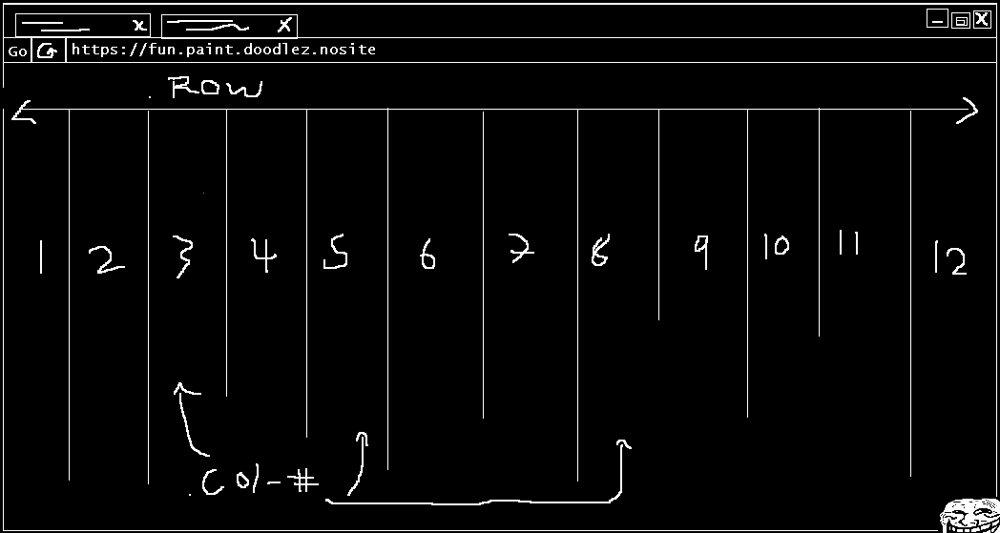

Technical Blog Part 2
What is grid based design?
Grid based design is a way for a developer to organise the design of their project using a framework. Using a framework the developer can split the page into individual rows and columns, then depending on what they're trying to create can allocate different areas of the page to specific elements. In the tutorial we had a go at creating our own framework, one similar to the Bootstrap one. We needed to split up all the rows and columns to create a grid format. This was the idea of what we needed to create :
As you can see the row class needs to be the full width of the page so setting this to width: 100%; will do this for us giving the framework the rows, then we add in 12 columns. Why 12? because 12 can be split evenly by 1,2,3,4 and 6 giving us the freedom to configure our website in many different ways, each Colum is given a responsive width based on the relation to how many columns its going to take up i.e. col-1 will take up 1/12 of the page and col-12 will take up all 12/12 columns. This framework has split our page into a grid and this design is referred to as grid design.
What’s all the hype about responsive webpages?
In today’s world there are many different devices such as desktops, laptops, tablets, phones, TVs, game consoles and even Smartwatches that have the ability to browse the web. Each of these devices have various screen sizes as well as different ways the user interacts with them. Previously web developers only needed to worry about users viewing pages on monitors, so responsiveness wasn't necessarily a major part of the design process but now with all the different devices around, developers are needing to create pages that will respond to the dimensions and input methods of the device and display styles designed specifically for them. Media queries were added to CSS to give the developer the option to design for a specific device, such queries as @media screen and (max-width: #) {.. style ..} means the style is only for devices connected with a screen and is within the max-width value.
Touch screen devices impact heavily on the design of a site, because instead of using a mouse to navigate which is really precise the users are now using their finger. To account for this many developers create a style with bigger buttons or a different type of navigation etc. to achieve good UX implementation. Media queries are around in CSS to detect touch mode such as :-moz-system-metric(touch-enabled) however these classes only work for certain browsers and cant guarantee cross browser compatibility. Utilizing some JS tools such as modernizr and using their media query features is a much more professional approach.
Semantic structure
Wiki answered this perfectly, Semantic HTML is the use of HTML mark-up to reinforce the semantics, or meaning, of the information in webpages and web applications rather than merely to define its presentation or look. Semantic HTML is processed by traditional web browsers as well as by many other user agents. CSS is used to suggest its presentation to human users.